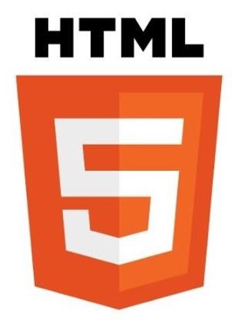

HTML5 개요와 활용
2019년 02월 14일
HTML 5는 별도 프로그램을 깔지 않아도 인터넷 브라우저상에서 화려한 그래픽 효과를 구현하며, 음악ㆍ동영상을 자유롭게 감상할 수 있는 마크업 언어(markup language)이다.
2004년부터 HTML 5 표준화 그룹인 WHATWG(Web Hypertext Application Technology Working Group)는 HTML 5를 HTML의 차기 핵심 표준으로 만들기 위한 세부 작업을 시작하였고, 2014년 10월 웹표준화기구 월드와이드컨소시엄(W3C)은 HTML 5을 웹표준으로 선정했다. 이에 따라 애플ㆍ마이크로소프트(MS), 구글, 페이스북 등 글로벌 IT 기업들은 HTML 5 시대 주도권을 잡기 위해 치열한 경쟁에 돌입하기도 했다.